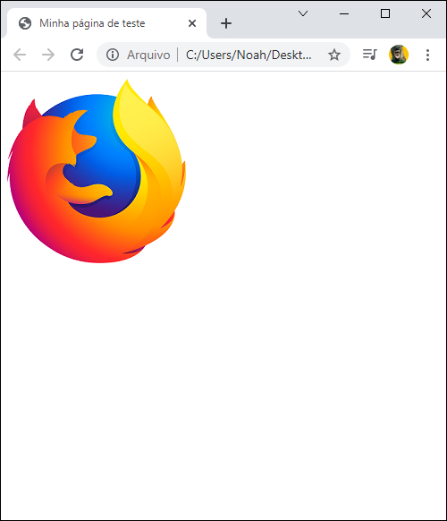

Instalando os programas básicos
Origem: developer.mozilla.org
Um computador. Talvez isso soe óbvio para algumas pessoas, mas alguns de vocês estão lendo esse artigo de um smartphone
ou de um computador público. Para um desenvolvimento sério em web, é melhor investir em um desktop ou notebook rodando
Windows, macOS ou Linux.
Um editor de texto, para escrever código. Pode ser um editor de texto (ex: Visual Studio Code (em inglês), Notepad++ (em
inglês), Sublime Text (em inglês), Atom (em inglês), Brackets, GNU Emacs (em inglês) ou VIM (em inglês)), ou um editor
hibrído (ex: Dreamweaver ou WebStorm (em inglês)). Editores de documentos do Office não são adequados para esse tipo de
uso, pois ele se baseiam em elementos escondidos que interferem com os motores de renderização usados pelos navegadores.
Navegadores web, para testar os códigos. Atualmente os navegadores mais usados são Firefox, Chrome, Opera, Safari,
Internet Explorer e Microsoft Edge. Você também deve testar o desempenho do seu site em dispositivos móveis e
navegadores antigos que seu público-alvo ainda esteja usando (como o IE 8–10). O Lynx, um navegador da Web baseado em
texto, é ótimo para ver como o site é experimentado por usuários com deficiência.
Um editor gráfico, como o GIMP (em inglês), Paint.NET (em inglês), Photoshop, or XD , para fazer imagens ou gráficos
para suas páginas.
Instalando um editor de texto
Origem: developer.mozilla.org
Você provavelmente já tem um editor de texto básico no seu computador. Por padrão, o Windows inclui o Bloco de Notas (em
inglês) e o Mac OS vem com o TextEdit (em inglês). Linux varia; Ubuntu vem com o gedit (em inglês) por padrão.
Para desenvolvimento web, você provavelmente pode ter mais do que o Bloco de Notas ou o TextEdit. Recomendamos começar
com o Visual Studio Code (em inglês), que é um editor gratuito, que oferece visualizações ao vivo e dicas de código.
Planejamento
Origem: developer.mozilla.org
Antes que você faça qualquer coisa, você precisa de algumas ideias. O que seu site realmente vai fazer? Um site pode
fazer praticamente tudo, mas primeiro você deve manter as coisas em um nível simples. Nós vamos começar criando um site
simples com um cabeçalho, uma imagem e alguns parágrafos.
Lidando com arquivos
Origem: developer.mozilla.org
Quando você está trabalhando em um site localmente no seu próprio computador, você deve manter todos os arquivos
relacionados em uma mesma pasta que reflete a estrutura dos arquivos do site publicado em um servidor. Essa pasta pode
estar em qualquer lugar que você quiser, mas você deve colocá-la em algum lugar de fácil acesso, talvez no Desktop, na
sua pasta Home, ou na raiz do seu HD.
Escolha um lugar para guardar seus projetos de site. Aqui, crie uma nova pasta chamada projetos-web (ou algo do tipo).
Essa é a pasta onde todos seus projetos de site estarão.
Dentro dessa pasta, crie outra pasta para guardar seu primeiro site. Chame ela de site-teste (ou algo mais criativo).
Qual estrutura seu site deve ter?
Origem: developer.mozilla.org
A seguir, vamos ver qual estrutura seu site teste deve ter. As coisas mais comuns que temos em qualquer projeto de site
que criamos são um arquivo de índice HTML e pastas que contém imagens, arquivos de estilo e arquivos de scripts. Vamos
criá-los agora:
index.html: Esse arquivo vai geralmente conter o conteúdo da sua página, ou seja, os textos e as imagens que as pessoas
veem quando acessam seu site pela primeira vez. Usando seu editor de texto, crie um novo arquivo chamado index.html e
salve dentro da sua pasta site-teste.
pasta imagens: Essa pasta vai conter todas as imagens que você vai usar no seu site. Crie uma pasta chamada imagens,
dentro da sua pasta site-teste.
pasta estilos: Essa pasta vai conter os códigos CSS usados para dar estilo ao seu conteúdo (por exemplo, configurando a
cor do texto e do fundo da página). Crie uma pasta chamada estilos, dentro da pasta site-teste.
pasta scripts: Essa pasta vai conter todos os códigos JavaScript usados para adicionar funcionalidades interativas para
seu site (ex.: botões que carregam dados quando clicados). Crie uma pasta chamada scripts, dentro da sua pasta
site-teste.
Caminhos de arquivo
Origem: developer.mozilla.org
Para fazer arquivos conversarem entre si, você tem que fornecer um caminho de arquivo entre eles — basicamente uma rota
para que um arquivo saiba onde o outro está. Para demonstrar isso, nós vamos inserir um pouco de HTML no nosso arquivo
index.html, e fazer mostrar a imagem que você escolheu no artigo "Como será o seu site?"
Copie a imagem que você escolheu antes para sua pasta imagens.
Abra seu arquivo index.html e insira o seguinte código exatamente como está escrito. Não se preocupe com o significado —
nós vamos olhar com mais detalhes essa estrutura posteriormente.
<!DOCTYPE html>
<html>
<head>
<meta charset="UTF-8">
<title>Minha página de teste</title>
</head>
<body>
<img src="" alt="Minha imagem de teste">
</body>
</html>
Exemplo do nosso index.html.
A linha <img src="" alt="Minha imagem de teste"> é o código HTML que vai inserir uma imagem na
página. Nós precisamos
dizer ao HTML onde a imagem está. A imagem está dentro da pasta imagens, no mesmo diretório do
index.html. Para trilhar
o caminho de index.html para nossa imagem, o caminho é imagens/nome-da-sua-imagem. Por exemplo, nossa
imagem é chamada
firefox-icon.png, então, nosso caminho é imagens/firefox-icon.png.
Insira o caminho dentro do seu código HTML, dentro das aspas do código
src="".
Salve seu arquivo HTML, então carregue em seu navegador web (dê um duplo-clique no arquivo). Você deve ver sua nova
página mostrando sua imagem!

Exibindo imagem do index.html.
Anatomia de um documento HTML
Origem: developer.mozilla.org
Isso resume o básico dos elementos HTML individuais, mas eles não são úteis por si só. Agora vamos ver como elementos
individuais são combinados para formar uma página HTML inteira. Vamos visitar novamente os códigos que colocamos no
exemplo de index.html (que vimos no artigo Lidando com arquivos):
<!DOCTYPE html>
<html>
<head>
<meta charset="UTF-8">
<title>Minha página de teste</title>
</head>
<body>
<img src="" alt="Minha imagem de teste">
</body>
</html>
Exemplo do nosso index.html.
Aqui nós temos:
<!DOCTYPE html> — o doctype. É a parte inicial obrigatória do documento. Nas névoas do tempo, quando o HTML era novo
(por volta de 1991/2), doctypes eram criados para agir como links para um conjunto de regras que a página HTML tinha que
seguir para ser considerada um bom HTML, o que poderia significar checagem automática de erros e outras coisas úteis. No
entanto, atualmente, eles não fazem muito sentido e são basicamente necessários apenas para garantir que o documento se
comporte corretamente. Isso é tudo que você precisa saber agora.
<html></html> — o elemento <html>. Esse elemento envolve todo o conteúdo da página e às
vezes é conhecido como o elemento raiz.
<head></head> — o elemento <head>. Esse elemento age como um recipiente de tudo o que você deseja incluir em uma página HTML que não é o conteúdo
que você quer mostrar para quem vê sua página. Isso inclui coisas como palavras-chave e uma descrição que você quer
que apareça nos resultados de busca, CSS para dar estilo ao conteúdo, declarações de conjuntos de caracteres e etc.
<meta charset="utf-8"> — esse elemento define o conjunto de caracteres que seu documento deve usar para o UTF-8, que
inclui praticamente todos os caracteres da grande maioria dos idiomas escritos. Essencialmente, agora ele pode
manipular qualquer conteúdo textual que você possa colocar. Não há razão para não definir isso e assim pode ajudar a
evitar alguns problemas no futuro.
<title></title> — o elemento <title>. Ele define o título da sua página, que é o título que aparece na guia do
navegador onde sua página é carregada. Ele também é usado para descrever a página quando você a adiciona aos
favoritos.
<body></body> — o elemento <body>. Contém todo o conteúdo que você quer mostrar ao público que visita sua página, seja texto, imagens, vídeos,
jogos, faixas de áudio reproduzíveis ou qualquer outra coisa.
Imagens
Origem: developer.mozilla.org
Isso resume o básico dos elementos HTML individuais, mas eles não são úteis por si só. Agora vamos ver como
elementos
individuais são combinados para formar uma página HTML inteira. Vamos visitar novamente os códigos que
colocamos no
exemplo de index.html (que vimos no artigo Lidando com arquivos):
<!DOCTYPE html>
<html>
<head>
<meta charset="UTF-8">
<title>Minha página de teste</title>
</head>
<body>
<img src="imagens/firefox-icon.png" alt="Minha imagem de teste">
</body>
</html>
Inserindo imagem no index.html.
Marcando o texto
Origem: developer.mozilla.org
Essa seção abordará alguns dos elementos HTML essenciais que você usará para marcar o texto.
Cabeçalhos
Os elementos de cabeçalhos permitem especificar que certas partes do seu conteúdo são títulos ou subtítulos. Da mesma
forma que um livro tem o título principal e os capítulos possuem títulos e subtítulos, um documento HTML também tem.
HTML contém 6 níveis de título, <h1> - <h6>, embora você normalmente só use de 3 a 4:
<h1>Meu título principal</h1>
<h2>Meu título de alto nível</h2>
<h3>Meu subtítulo</h3>
<h4>Meu segundo subtítulo</h4>
Niveis de cabeçalhos.
Agora, tente adicionar um título adequado à sua página HTML logo acima do elemento <img>.
<!DOCTYPE html>
<html>
<head>
<meta charset="UTF-8">
<title>Minha página de teste</title>
</head>
<body>
<h1>Mozilla is cool</h1>
<img src="imagens/firefox-icon.png" alt="Minha imagem de teste">
</body>
</html>
Inserindo cabeçalho no index.html.
Parágrafo
Os elementos são para conter parágrafos de texto; você os usará com frequência ao marcar um conteúdo de texto
regular:
<p>Este é um parágrafo simples</p>
Inserindo parágrafo no index.html.
Adicione seu texto de exemplo em um ou alguns parágrafos, colocados diretamente
abaixo do seu elemento <img>.
<!DOCTYPE html>
<html>
<head>
<meta charset="UTF-8">
<title>Minha página de teste</title>
</head>
<body>
<h1>Mozilla é legal</h1>
<img src="imagens/firefox-icon.png" alt="Minha imagem de teste">
<p>Na Mozilla, somos uma comunidade global de</p>
</body>
</html>
Inserindo parágrafo no index.html.
Listas
Muito do conteúdo da web é de listas e o HTML tem elementos especiais para elas. Listas de marcação sempre consistem em
pelo menos 2 elementos. Os tipos mais comuns de lista são ordenadas e não ordenadas:
Listas não ordenadas são para listas onde a ordem dos itens não importa, como uma lista de compras, por exemplo. Essas
são envolvidas em um elemento <ul>.
Listas Ordenadas são para listas onde a ordem dos itens importa, como uma receita. Essas são envolvidas em um
elemento <ol>.
Cada item dentro das listas é posto dentro de um elemento <li> (item de lista).
Por exemplo, se nós quisermos tornar uma parte de um parágrafo numa lista:
<p>Na Mozilla, somos uma comunidade global de</p>
<ul>
<li>tecnólogos</li>
<li>pensadores</li>
<li>construtores</li>
</ul>
<p>trabalhando juntos ... </p>
Inserindo lista no index.html.
Tente adicionar uma lista ordenada ou não ordenada à sua página de exemplo.
<!DOCTYPE html>
<html>
<head>
<meta charset="UTF-8">
<title>Minha página de teste</title>
</head>
<body>
<h1>Mozilla é legal</h1>
<img src="imagens/firefox-icon.png" alt="Minha imagem de teste">
<p>Na Mozilla, somos uma comunidade global de</p>
<ul>
<li>tecnólogos</li>
<li>pensadores</li>
<li>construtores</li>
</ul>
<p>trabalhando juntos ... </p>
</body>
</html>
Inserindo lista no index.html.
Links
Links são muito importantes — eles são o que faz da web ser de fato uma REDE! Para adicionar um link, precisamos usar um
elemento simples — <a> — "a" é a forma abreviada de "âncora". Para transformar o texto do seu parágrafo em um link, siga
estas etapas:
Escolha algum texto. Nós escolhemos o texto "Mozilla Manifesto".
Envolva o texto em um elemento <a> , assim:
Dê ao elemento <a> um atributo href, assim:
<a href="">Mozilla Manifesto</a>
Inserindo link no index.html.
Preencha o valor desse atributo com o endereço da Web que você deseja vincular o link:
<a href="https://www.mozilla.org/pt-BR/about/manifesto/">Mozilla Manifesto</a>
Inserindo link no index.html.
CSS básico
Origem: developer.mozilla.org
Assim como o HTML, o CSS não é realmente uma linguagem de programação. Também não é uma linguagem de marcação — é uma
linguagem de folhas de estilos. Isso significa que o CSS permite aplicar estilos seletivamente a elementos em documentos
HTML. Por exemplo, para selecionar todos os elementos parágrafo de uma página HTML e tornar o texto dentro deles
vermelho, você escreveria este CSS:
Vamos tentar: cole as três linhas de CSS acima em um novo arquivo, no seu editor de texto, e salve o arquivo como
estilo.css na sua pasta estilos.
Abra seu arquivo index.html e cole o seguinte código em algum lugar no cabeçalho, ou seja, entre
as tags <head> e </head>:
<link href="estilos/estilo.css" rel="stylesheet">
Exemplo de um link CSS.
Salve o arquivo index.html e abra ele no seu navegador. Você deve ver uma página como essa:
Resultado final com CSS no navegador.
Conclusão
Se você seguiu todas as instruções neste artigo, você deve terminar com uma página que pareça algo do tipo:
<!DOCTYPE html>
<html>
<head>
<meta charset="UTF-8">
<title>Minha página de teste</title>
<link href="estilos/estilos.css" rel="stylesheet">
</head>
<body>
<h1>Mozilla é legal</h1>
<img src="imagens/firefox-icon.png" alt="Minha imagem de teste">
<p>Na Mozilla, somos uma comunidade global de</p>
<ul>
<li>tecnólogos</li>
<li>pensadores</li>
<li>construtores</li>
</ul>
<p>trabalhando juntos ... </p>
<a href="https://www.mozilla.org/pt-BR/about/manifesto/">Mozilla Manifesto</a>
</body>
</html>
conclusão do index.html com CSS.
Resultado final com CSS no navegador.